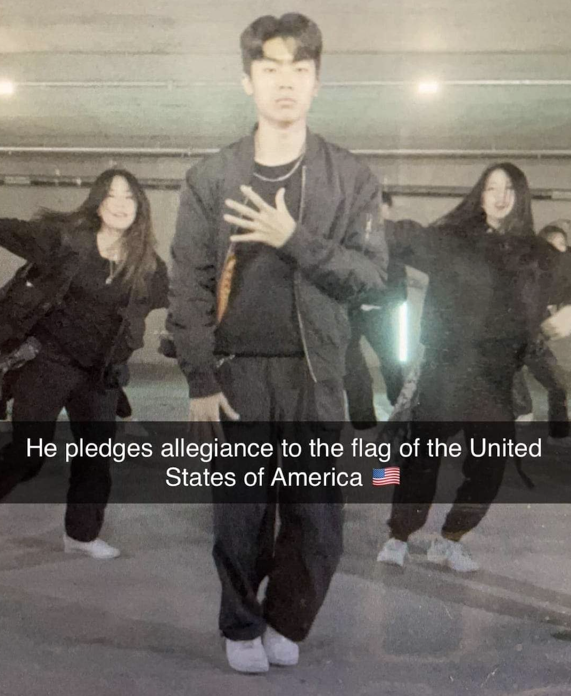

David Lim
EECS Senior
uh hello this is me here we go yuh uh yeah beep boop this is my bio this is me accept me as who i am
- Kimchi Garden
- Hay Tea
- McDonald's

random youtube video
Part 2: Reading Responses
- You have to really pay attention to the details when analyzing apps.
It doesn't just mean to look at its general layout but at every tiny text, buttons, and images,
and why they were composed in the way that they are.
- Breaking down the analysis into detailed points using specific examples was really refreshing & insightful!
uh here's another sentence to meet the 2 sentence requirement but yee I like the demos
- "Why would someone open this app? What problem does it solve?
How could the design help to solve that problem even better?"
- 8